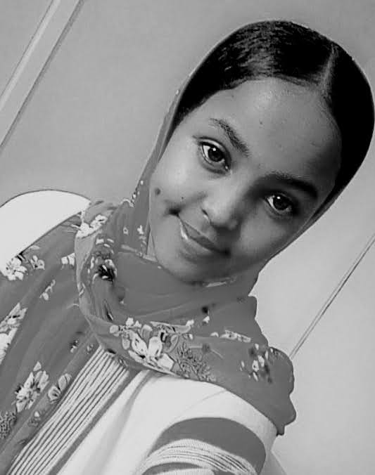

Wato Isacko is a great lady from Northern part of Kenya.She was born in the year 2001
in a family of two boys and three girls.She grew up in a nomadic parstrolist community who were against girl
child education
but that did not hinder her from fulfling her dream.
she currently stays in Nairobi Kenya pursuing software engineering course at AkiraChix
Her short term goal is to get a job in a reputed company.
Her long term goal is to achieve a good position
where she can build her career and help the organization too
some of her are hobbies are listening to music,swimming
some of her are hobbies are listening to music,swimming
reading novel,designing and she is also interested in learnimg foreign language
